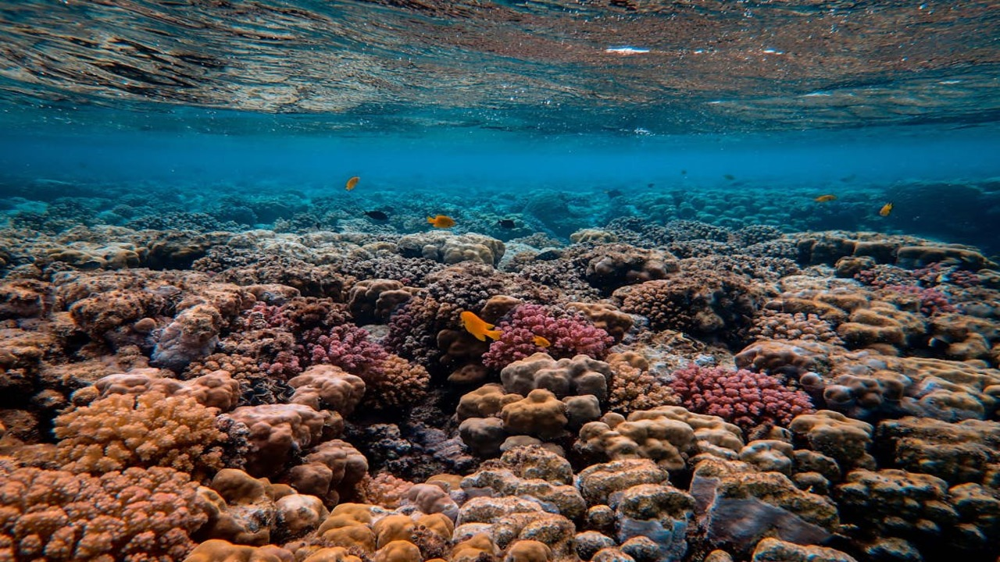
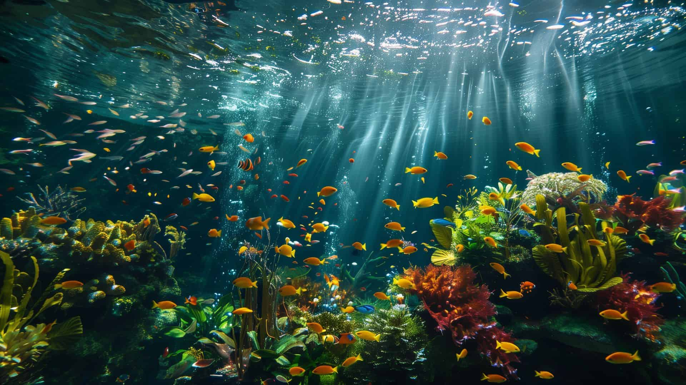

São animais marinhos pertencentes ao filo dos Cnidários e vivem em mares tropicais de águas quentes e claras. Assim como os liquens presentes nas árvores da Trilha do Lago, a presença de corais saudáveis indica uma boa qualidade da água daquele local. Os corais vivem presos ao fundo do mar, como se fossem plantas, formando colônias de grandes dimensões. Seu esqueleto de calcário de forma aproximadamente cilíndrica e oca, é composto de carbonato de cálcio, carbonato de magnésio e outras substâncias.
Os corais são coloridos principalmente por causa das algas microscópicas chamadas zooxantelas, que vivem dentro de seus tecidos. Essas algas mantêm uma relação simbiótica com o coral: elas realizam fotossíntese, produzindo açúcares e oxigênio que servem de alimento para o coral, enquanto recebem abrigo e nutrientes em troca. As zooxantelas contêm pigmentos fotossintéticos, como clorofilas e carotenoides, que variam em tons de amarelo, marrom, verde e vermelho, sendo os principais responsáveis pela coloração dos corais. Além disso, os próprios corais produzem proteínas fluorescentes que funcionam como uma forma de proteção contra a luz solar intensa, refletindo cores vibrantes como azul, roxo, rosa e verde. Quando há mudanças na temperatura da água ou aumento da poluição, os corais podem sofrer estresse ambiental e expulsar as zooxantelas. Sem essas algas, eles perdem sua coloração e ficam brancos, em um processo conhecido como branqueamento dos corais, que enfraquece os recifes e pode levar à morte dos organismos se as condições não melhorarem.
Como falamos de algas, o que elas são? São organismos aquáticos capazes de realizar fotossíntese, ou seja, produzem seu próprio alimento utilizando luz solar, água e gás carbônico. Embora se assemelhem às plantas, as algas não pertencem ao mesmo grupo delas e apresentam uma enorme diversidade em tamanho, forma e habitat. Elas podem ser unicelulares, formadas por uma única célula, como ocorre com muitas microalgas, ou multicelulares, formando grandes estruturas conhecidas como algas marinhas. Vivem principalmente em ambientes aquáticos, tanto em água doce quanto em água salgada, podendo flutuar livremente, compondo o plâncton, ou permanecer fixas em rochas e outras superfícies submersas.